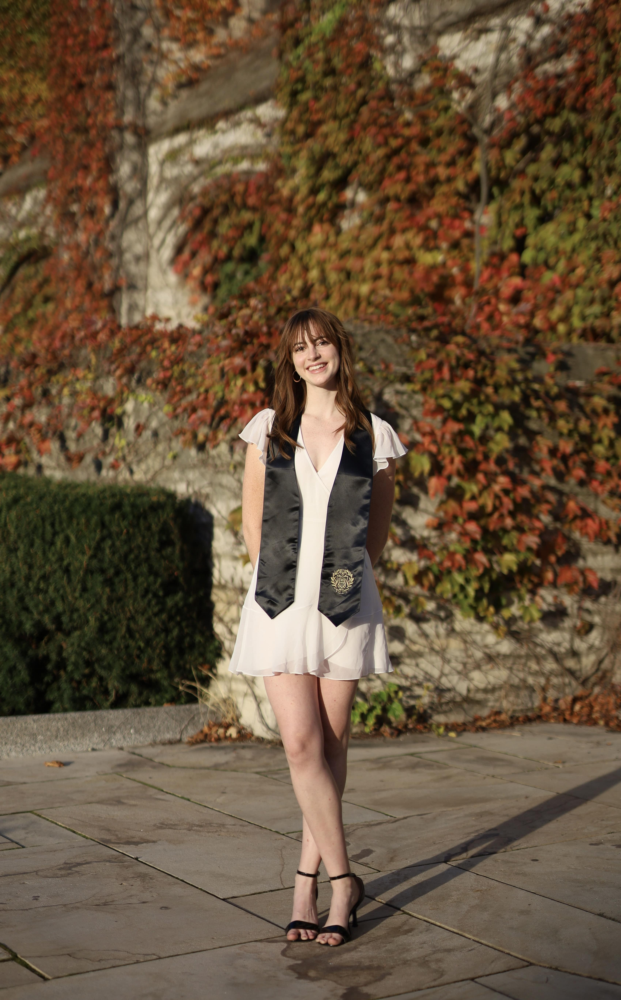

Hi, I'm Elena!

Getting the basics out of the way...
- I'm a recent graduate (Dec. 2024!) of Northwestern University in Evanston, IL.
- At Northwestern, I double majored in Journalism and Economics, with a minor in Classics.
- I'm originally from metro Atlanta, GA.
- Today, I'm back home in Atlanta, working as an associate consultant for Bain & Company.
Here's what I'm passionate about:
- Tackling business issues with a people-centered approach
- Storytelling to synthesize all sides of an issue
- Leveraging data to back it all up
Here's what keeps me going:
- College football, especially UGA, LSU and UT (lots of clash here, sorry)
- Art museums with expansive Classical art collections
- Urban walking paths---okay, maybe just Atlanta's Beltline
- HBO shows, including but not limited to The Wire, Industry and True Detective (Seasons 1 and 4)